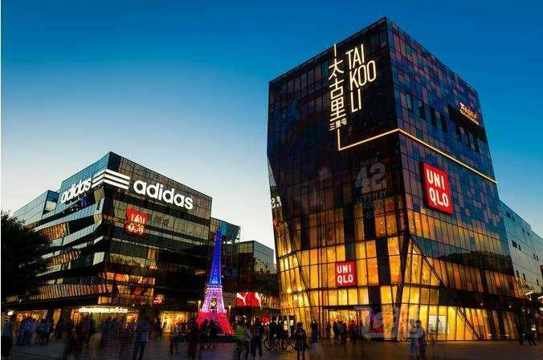
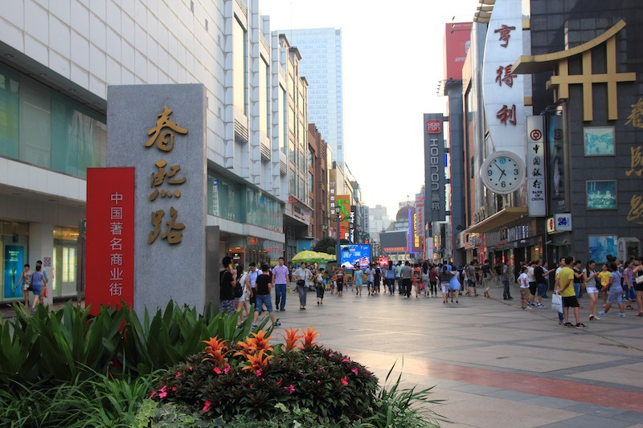
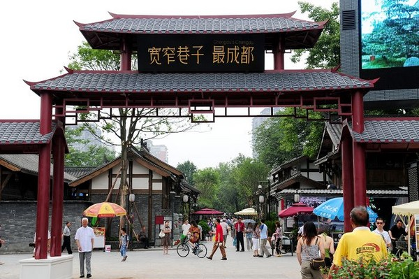

Welcome to Chengdu
成都
熊猫塔
太古里
春熙路
宽窄巷
锦里
天府熊猫塔
天府熊猫塔实名为锦绣天府塔。位于成都市成华区猛追湾街168号，占地10亩，塔高339米，是中国西部第一高塔。作为四川省和成都市的绝对地标性建筑，塔上8000平方米用以开展高空旅游、旋转餐厅、室内外观光层及会展演艺等，开展各类商务及群众文化活动，并为城市提供景观光彩照明。
远洋太古里
远洋太古里位于中国成都市锦江区商业零售核心地段，并与春熙路购物商圈接壤，是一个总楼面面积逾11.4万平方米（逾123万平方英尺）的开放式、低密度的街区形态购物中心，由太古地产联合远洋地产发展。

春熙路
春熙路位于成都市锦江区春熙路街道，覆盖北新街以东、总府路以南、红星路以西、东大街以北、南新街、中新街以及临街区域，面积大约20公顷。春熙路热闹繁华，现大约有商业网点700家，网点面积大约220000平方米，被业内誉为中国特色商业街。

宽窄巷子
宽窄巷子位于四川省成都市青羊区长顺街附近，由宽巷子、窄巷子、井巷子平行排列组成，全为青黛砖瓦的仿古四合院落，这里也是成都遗留下来的较成规模的清朝古街道，与大慈寺、文殊院一起并称为成都三大历史文化名城保护街区。

锦里
锦里是成都武侯祠博物馆（三国历史遗迹区、锦里民俗区、西区）的一部分，占地30000余平方米，建筑面积14000余平方米，街道全长550米，以明末清初川西民居作外衣，三国文化与成都民俗作内涵，集旅游购物、休闲娱乐为一体。